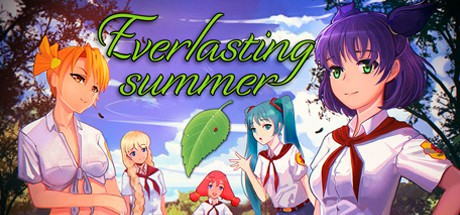

Бесконечное Лето — российская визуальная новелла с элементами эроге в сеттинге летнего лагеря. Разработка
началась в мае 2008 года командой с IIchan.hk и закончилась в декабре 2013-го уже командой Soviet Games, была
выпущена 21 декабря этого же года в открытый доступ

Почему игра Бесконечное лето так называется?
Почему «Бесконечное Лето» так популярно в России?
У кого-то — тёплые деньки и долгожданная встреча с дворовыми друзьями. А для тех, у кого лето- это бесконечное количество свободного времени и твои экзестенциальные мысли поглощает тебя в дважды быстрее; или для тех, у кого особое настроение лета замещено рабочим графиком придумана Everlasting Summer.
Лена
Лена — одна из главных героинь новеллы «Бесконечное Лето». Основой для неё являлся маскот
имиджборда IIchan.hk
Лена — девушка среднего роста с тёмно-фиолетовыми волосами, собранными в два торчащих в разные стороны хвоста.
Главный герой при первой встрече описывает Лену так: «На её красивом лице, как мне показалось, муки за судьбы
всего человечества смешались с прямо-таки вселенской грустью.»
Асоциальна, крайне застенчива. Любит читать книги и сторонится быть в центре внимания. При всём этом, в
определенных ситуациях ведёт себя уверенно и хладнокровно. Влюблена в главного героя, отчего при встречах с ним
застенчивость Лены проявляется сильнее.
Но узнав Семёна получше, Лена может разговаривать с ним достаточно свободно (и порой даже очень экспрессивно).
Лена является любимой девочкой разработчика новеллы и автора данного руководства.
В модификациях, героиню сделали художницей и так же подарили ей фамилию, от которой разработчик данной новеллы
не стал отказываться - Тихонова.
Что разрабы думают о ней
«Лена — её никто никогда не видел настоящую (кроме, скорее всего, Алисы), потому что она никогда никому
не показывала себя такой. У неё есть желания, есть стремления, но она боится быть непонятой, боится до
такой степени, что давит всё это в себе, пока оно не взрывается и не вырывается наружу, как Везувий. Она
хочет страстно любить, до самоотречения, но чтобы докопаться до этого, придётся пройти много защитных
слоев.»
Взаимо